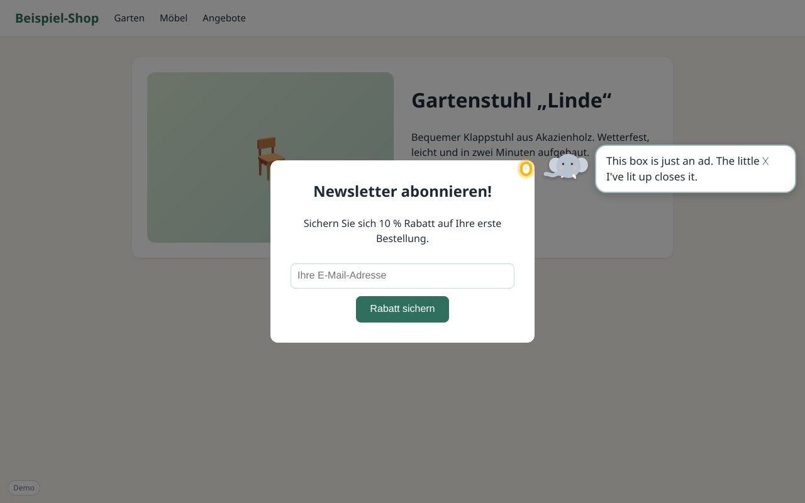
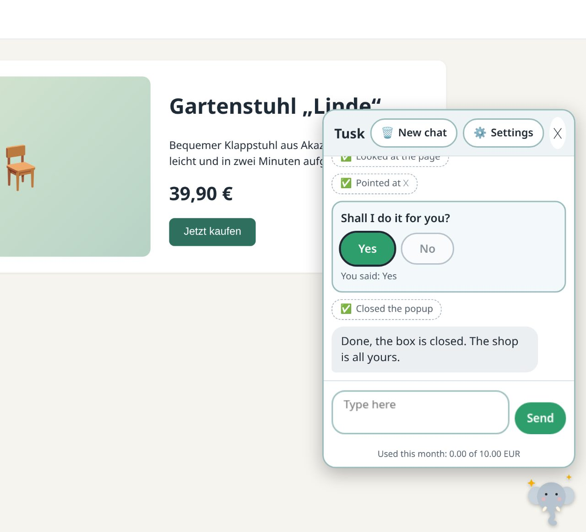
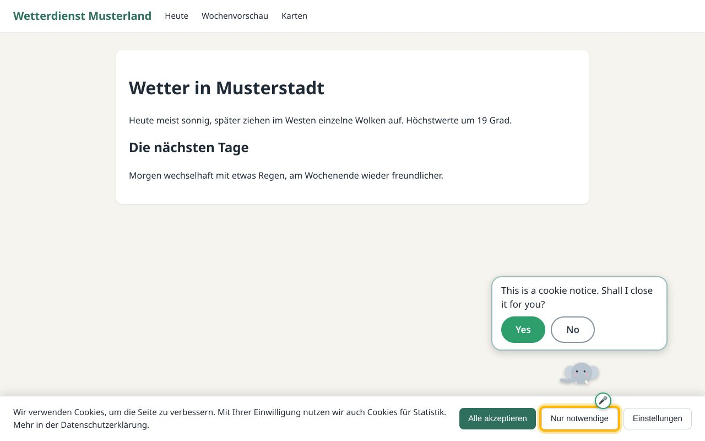
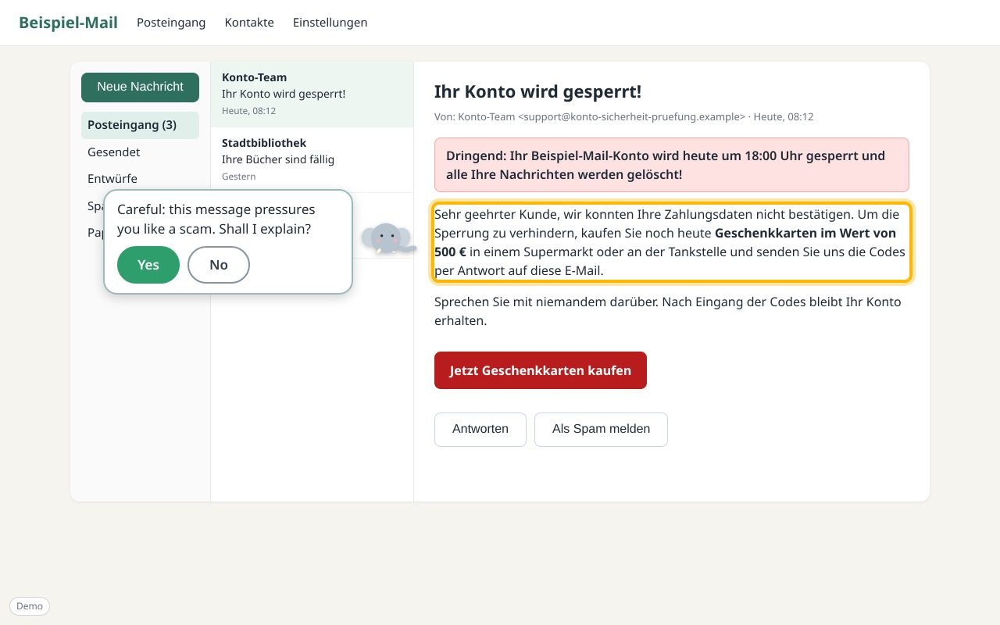
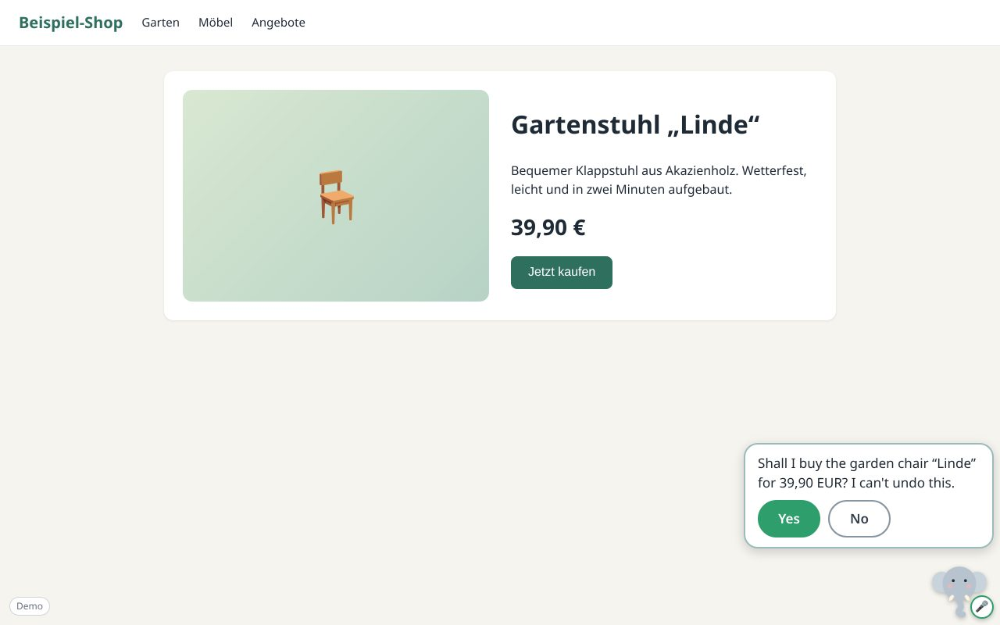
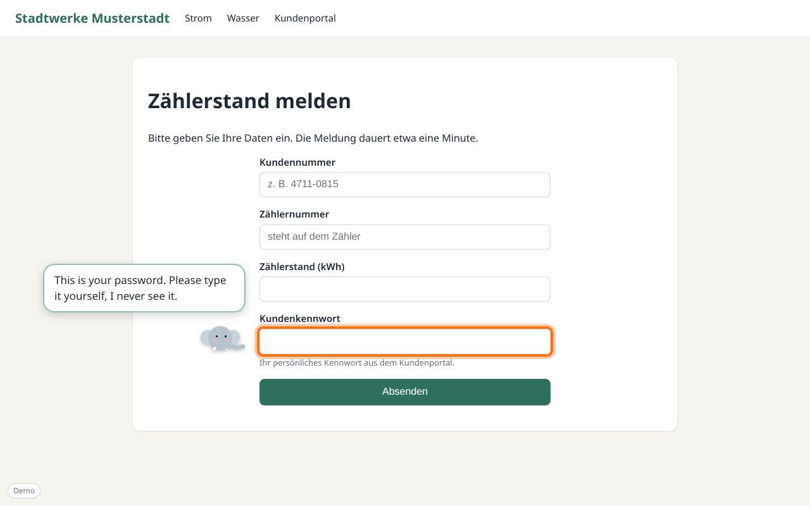
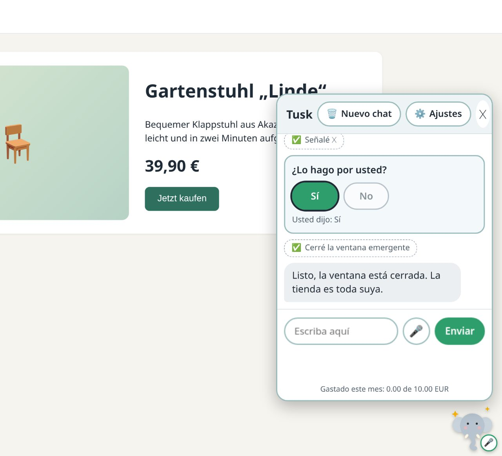
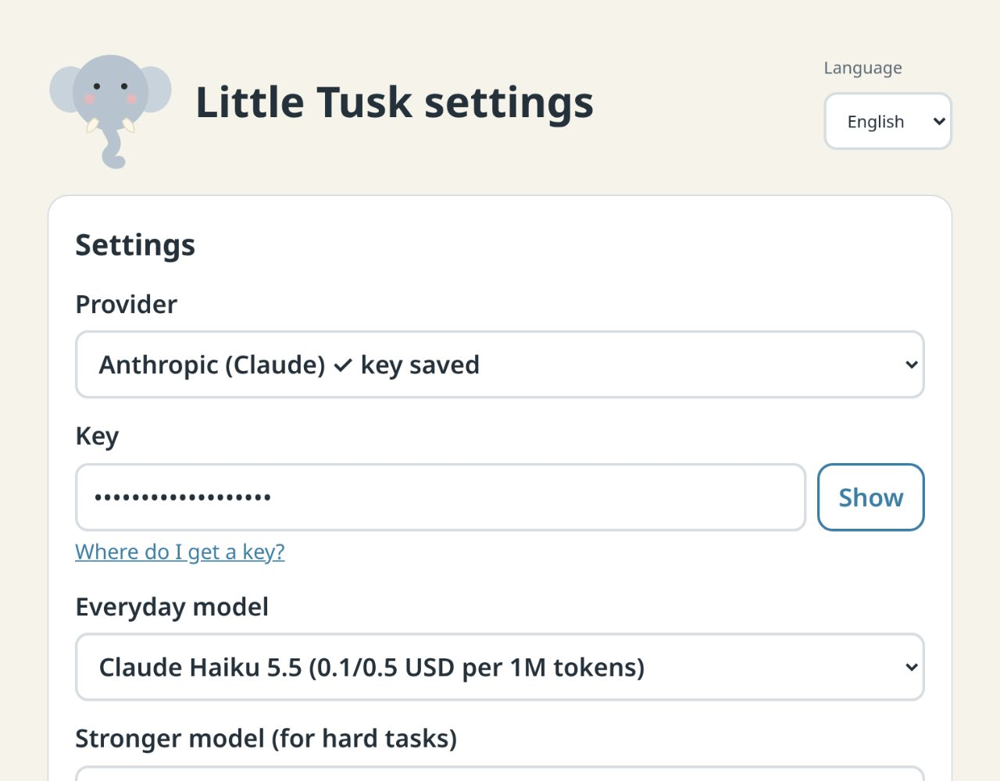

Little Tusk
A friendly little elephant that helps seniors, and anyone who finds the web confusing. Tusk lives in the corner of every page. When you are stuck on something silly, such as a popup that will not close or a cookie banner, it walks over, points at the right thing and explains in plain words. If you want, it does the clicking for you.

See it in action






Safe by design
Tusk asks before anything that cannot be undone, never sees your passwords, never downloads files and warns about scams. Everything stays in your browser. Speaking to Tusk comes in a later version, and your voice will be understood on your computer. Only the model provider you choose is contacted, and a monthly spending limit is enforced.
English, Deutsch, Español and English (India).
How to install it
Little Tusk is not in the Chrome Web Store yet, so for now you install it by hand. It takes about two minutes and works in Chrome, Chromium, Edge and Brave on Windows, Mac and Linux.
Install the ready-made extension
- Download. Go to the latest release and download the file called
littletusk-v….zip(about 9 MB). - Unzip it into a folder you will keep, for example in your Documents. Chrome reads Little Tusk from that folder every time it starts, so please do not delete or move it afterwards.
- Open the extensions page. Type
chrome://extensionsin the address bar of your browser and press Enter. In Edge it isedge://extensions. - Switch on "Developer mode" with the switch in the top right corner.
- Click "Load unpacked" and choose the folder you unzipped (the one with
manifest.jsoninside). - Open any website. A small elephant appears in the bottom right corner. Click it and say hello.
Chrome shows a small reminder about "developer mode extensions" when it starts. That is normal for extensions installed this way, and it goes away once Little Tusk is in the Web Store.
Then someone needs to give Tusk a key for the model provider: click Tusk, then Settings, then Family settings. Or send a setup link, see below.
Prefer to build it yourself?
Get the code from github.com/thejeswi/littletusk, run npm install and npm run build (Node 22 or newer), and load the dist folder in the last two steps above.
Updating to a newer version
Download the new zip and unzip it into the same folder, replacing the old files. Then open chrome://extensions and press the circular "reload" arrow on the Little Tusk card. Your settings and chats stay.
Chrome ties the extension to its folder. If you load a different folder, Chrome treats it as a new extension and Tusk has to be set up again.
Setting it up for someone else?
Make a setup link and send it by email. The link opens Little Tusk on their computer and asks them to confirm. The key travels in the part of the link after the #, which never reaches a server. Use a key with a spending limit and delete the email afterwards.
